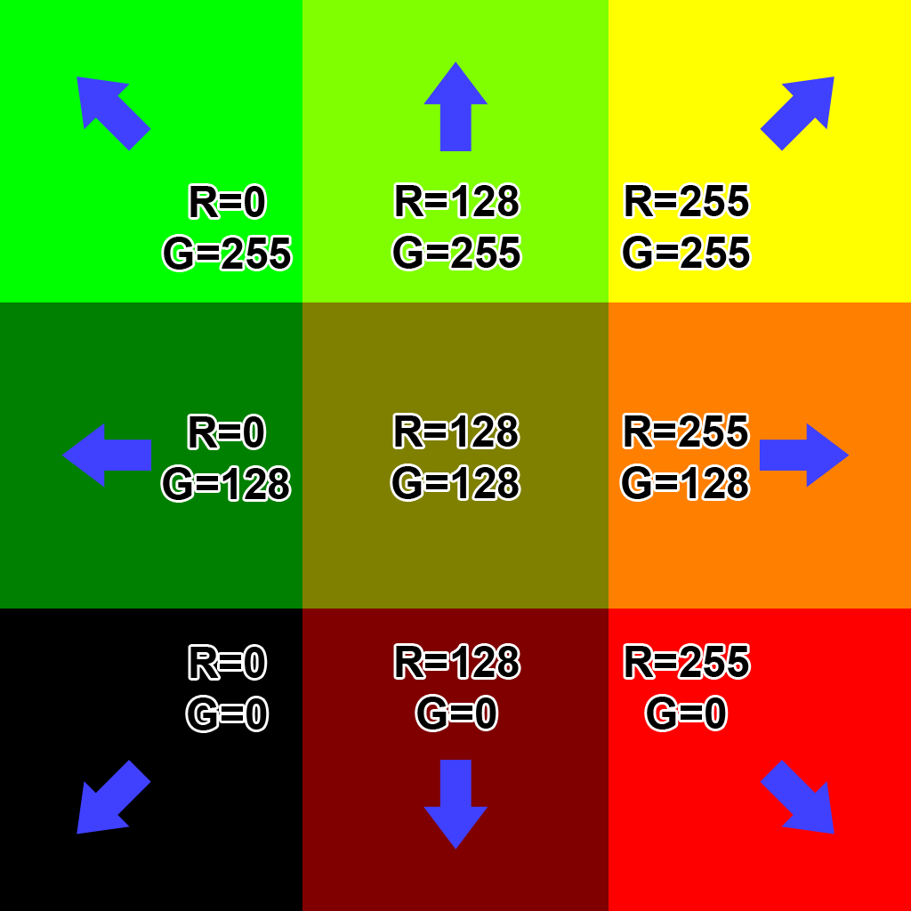

SpriteFlipBook_FlowMap_MotionVector
SpriteFlipBook
// uv : [0, 1]
// frame : time * FramePerSeconds
// imageCount : (ColumnCount, RowCount)
half2 GetSubUV(in half2 uv, in half frame, in uint2 imageCount)
{
// ex)
// frame = 9.9
// imageCount = (8, 8)
half2 scale = 1.0 / imageCount; // scale = (0.125, 0.125)
// floor : 소수점이하 버림.
// frac : 소수점이하 반환.
half index = floor(frame); // index = 9
// half index = frame - frac(frame);
// fmod : 나머지 반환.
// offset.x = 9 % 8 => 1
// offset.y = -1 - floor(9 * 0.125) => -1 -floor(1.125) => -2
half2 offset = half2(
fmod(index, imageCount.x),
-1 - floor(index * scale.x)
);
// y가 -1로 시작하는 이유.
// - uv좌표 : 좌하단
// - 이미지시트 : 좌상단
// 기준점을 uv(0, 0)을 sheet(0, -1)로 변환해야함.
return (uv + offset) * scale;
}
half frameNumber = _Time.y * _FramesPerSeconds;
half2 subUV = GetSubUV(IN.uv, frameNumber, uint2(_ColumnsX, _RowsY));
FlowMap
- FlowMapPainter
- mnpshino - 모션벡터와 플로우 맵 (2)
- SIGGRAPH2010 presentation Water Flow in Portal 2
- https://catlikecoding.com/unity/tutorials/flow/texture-distortion/
- http://wiki.polycount.com/wiki/Flow_map
- youtube: Flow Map Material Setup in 13 Minutes
- GDC2012 - Water Technology of Uncharted
- Graphics Runner: Animating Water Using Flow Maps by Kyle Hayward
- http://ttmayrin.tistory.com/40


half2 flowTex = SAMPLE_TEXTURE2D(_FlowTex, sampler_FlowTex, IN.uv).rg;
// flowTex[0, 1] => [-1, 1]
half2 flowUV = flowTex * 2.0 - 1.0;
// or flowTex[0, 1] => [-0.5, 0.5]
// half2 flowUV = flowTex - 0.5;
// [-1, 1] 선형 반복.
// frac : 소수점이하 반환.
half flowLerp = abs((frac(_Time.x * _FlowSpeed) - 0.5) * 2.0);
half2 uv0 = IN.uv + flowUV * frac(_Time.x * _FlowSpeed);
half2 uv1 = IN.uv + flowUV * frac(_Time.x * _FlowSpeed + 0.5);
half3 mainTex0 = SAMPLE_TEXTURE2D(_MainTex, sampler_MainTex, uv0).rgb;
half3 mainTex1 = SAMPLE_TEXTURE2D(_MainTex, sampler_MainTex, uv1).rgb;
half3 finalColor = lerp(mainTex0, mainTex1, flowLerp);
MotionVector
- http://www.klemenlozar.com/frame-blending-with-motion-vectors/
- GDC2012 - The Tricks Up Our Sleeves: A Walkthrough of the Special FX of Uncharted 3: Drake’s Deception
half frameNumber = _Time.y * _FramesPerSeconds;
uint2 imageCount = uint2(_ColumnsX, _RowsY);
OUT.frameNumber = frameNumber;
OUT.subUV0 = GetSubUV(IN.uv, frameNumber, imageCount);
OUT.subUV1 = GetSubUV(IN.uv, frameNumber + 1, imageCount);
// -------------------
// flowTex[0, 1] => [-1, 1]
half2 flowTex0 = SAMPLE_TEXTURE2D(_FlowTex, sampler_FlowTex, IN.subUV0).rg;
half2 flowTex1 = SAMPLE_TEXTURE2D(_FlowTex, sampler_FlowTex, IN.subUV1).rg;
flowTex0 = flowTex0 * 2.0 - 1.0;
flowTex1 = flowTex1 * 2.0 - 1.0;
half interval = frac(IN.frameNumber);
half2 mainUV0 = IN.subUV0 - (flowTex0 * interval * _DistortionStrength);
half2 mainUV1 = IN.subUV1 + (flowTex1 * (1 - interval) * _DistortionStrength);
half4 mainTex0 = SAMPLE_TEXTURE2D(_MainTex, sampler_MainTex, mainUV0);
half4 mainTex1 = SAMPLE_TEXTURE2D(_MainTex, sampler_MainTex, mainUV1);
half4 finalColor = lerp(mainTex0, mainTex1, interval);